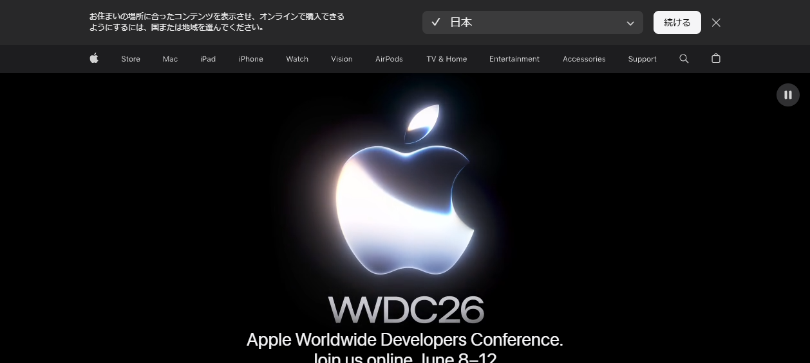
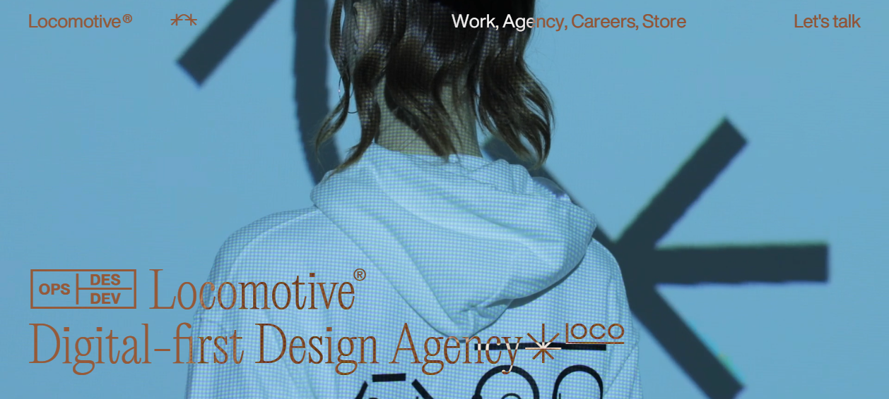
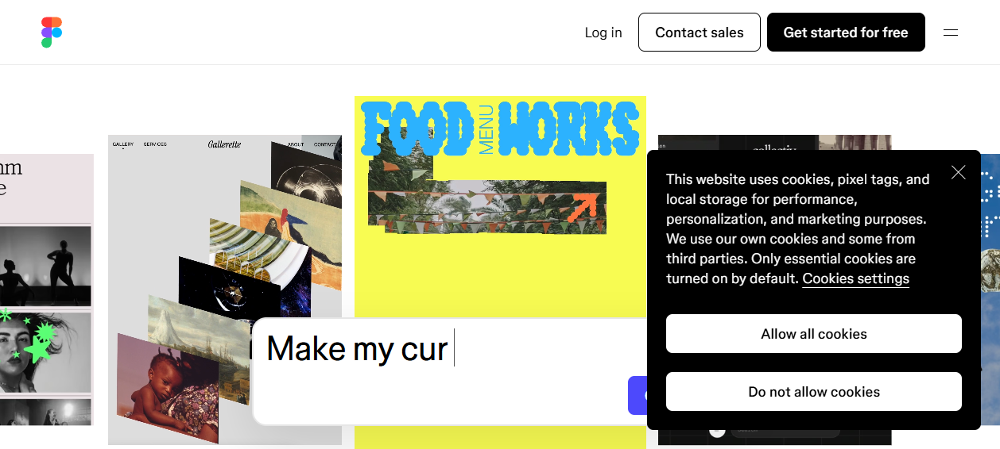
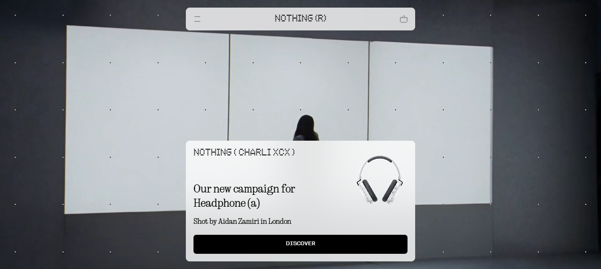
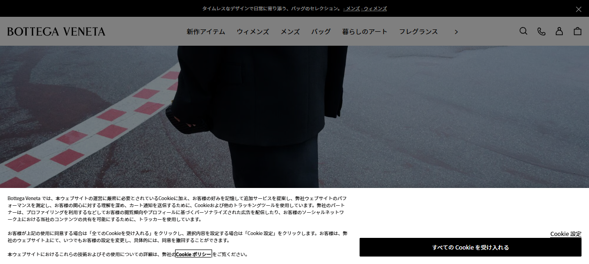
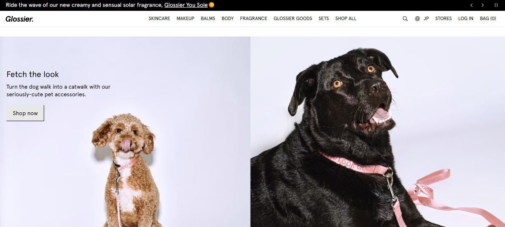
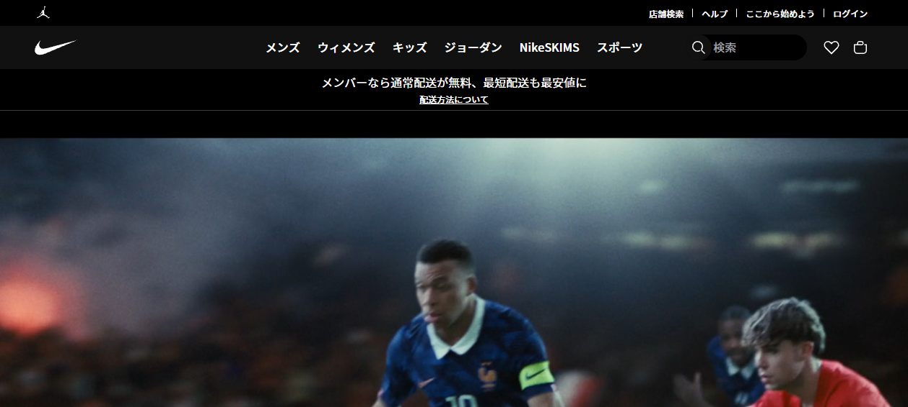
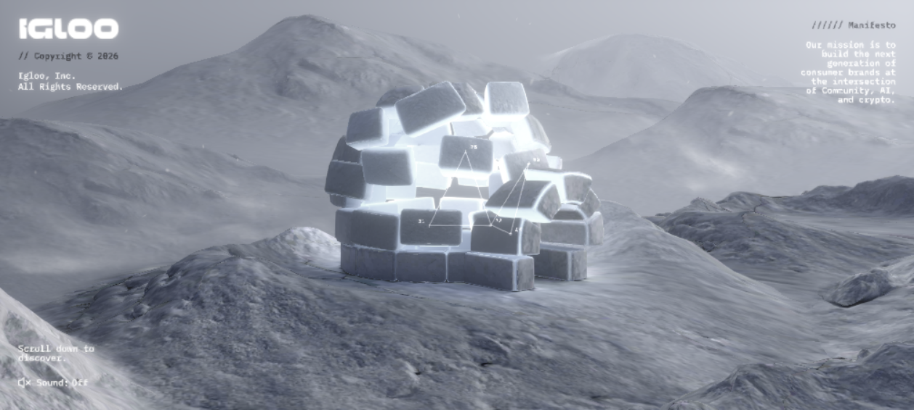
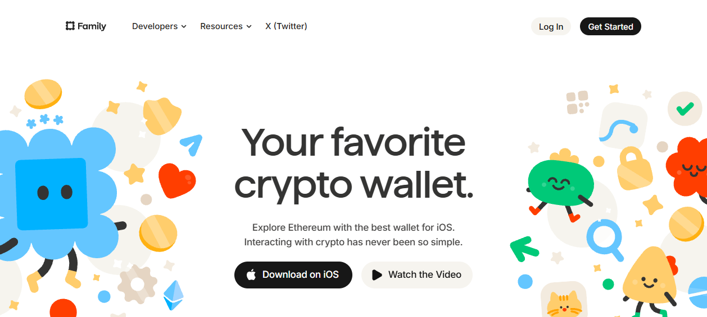
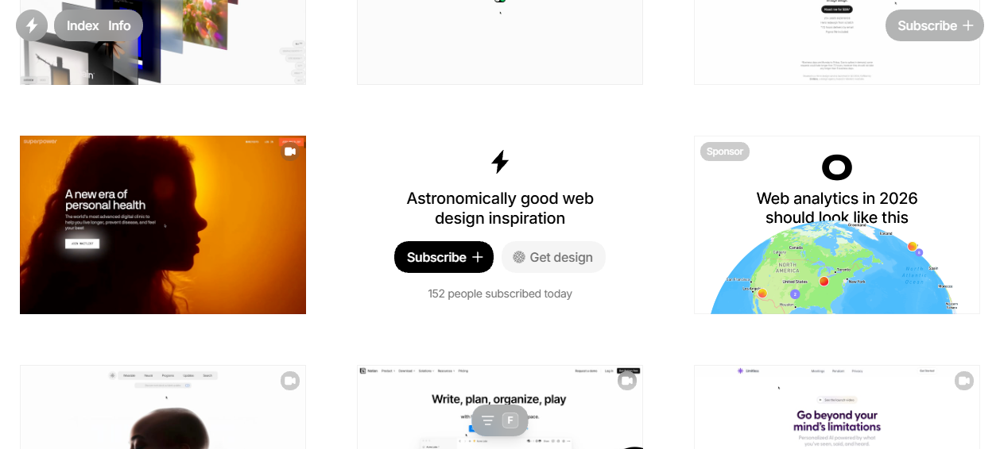

The index of world-class frontend & UI/UX.
A hand-picked atlas of the best frontend and UI/UX websites on the public web, grouped by industry. Every entry is backed by a first-hand teardown — sites pulled apart at the DOM, stack, and motion level, not "sites we like the look of."
What "world-class UI/UX" means here
It is not "the most animations." Across 50+ teardowns the same truth recurs: elite sites win on restraint, craft, and intent, not maximalism. Concretely, world-class means:
- One idea, executed flawlessly — a single signature move (a cursor, a gradient, one 3D hero) instead of ten competing effects.
- The site proves the pitch — dev studios render real-time WebGL; design tools dogfood themselves; SaaS embeds live interactive product, not screenshots.
- Typography does the heavy lifting — bespoke or carefully-licensed display faces, aggressive tracking, oversized hierarchy. Type is the brand.
- Motion has a budget — buttery, weighty scroll (Lenis), purposeful GSAP/ScrollTrigger, and the discipline to not animate when stillness is stronger.
- Performance is part of the design — workers, scroll-scrubbed video over JS frames, lazy WebGL. Beauty that stays jank-free.
How to use this list
- Start with the Hall of Fame below — 10 sites that teach the most per minute.
- Browse by industry to find references for the kind of thing you're building.
- For any site, open its teardown (
../workings/<slug>.md) for the stack, IA, motion system, and "what to steal." - Read the Cross-cutting signatures section last — it's the meta-pattern that ties the elite tier together.
A few luxury/commerce sites (Gucci, Aēsop, SSENSE) are marked reachable: false — their bot-defense perimeters blocked live automated capture, so those teardowns are reconstructed from design-award reviews and documented facts rather than a fresh DOM snapshot.
Hall of Fame
Ten sites that teach the most per minute. Each earns its place on a single, perfectly-executed signature move.



Creative Studios & Agencies
The genre where "the site is the portfolio." Expect restraint-as-flex, custom scroll engines, and a single proof-of-craft hero.
| Site | URL | Why world-class | Signature technique | Teardown |
|---|---|---|---|---|
| 14islands | 14islands.com | Editorial WebGL with near-monochrome calm; authors the very tooling (r3f-scroll-rig) others copy | Asymmetric editorial grid + Lenis-driven scroll-synced WebGL | 14islands.md |
| Cuberto | cuberto.com | Reference-grade agency polish from motion craft, not visual clutter | Open-sourced physics-based mouse-follower custom cursor | cuberto.md |
| Locomotive | locomotive.ca | 7× Awwwards Agency of the Year; framework-free yet world-class | Three.js scroll-synced 3D team models (Polycam→Blender→Mixamo) | locomotive.md |
| Hello Monday | hellomonday.com | Awwwards Agency + Site of the Year, FWA Hall of Fame | Persistent curved-black SVG nav rail + Clarendon serif + line art | hello-monday.md |
| Obys Agency | obys.agency | Swiss/neo-grotesque discipline over deep custom engineering | Bespoke sync-scroll work index + WebGL hover-bloom previews | obys-agency.md |
| Basement Studio | basement.studio | "We make cool shit that performs" proven in the first second | Real-time 3D "basement" room on an OffscreenCanvas worker thread | basement-studio.md |
| Refokus | refokus.com | Most-awarded Webflow agency — platform constraints are no excuse | Blur-to-focus scroll typography + WebGL/GSAP on a no-code CMS | refokus.md |
| Studio Freight / Darkroom | darkroom.engineering | Ships the scroll libs (Lenis, Hamo, Tempus) and proves them on itself | 4-way theme switcher (dark/light/red/simple); CRT-mono editorial | studio-freight-darkroom.md |
| Dept Agency | deptagency.com | Swiss-grid brutalism projecting absolute confidence | One screaming headline + single orange accent + full-bleed video | dept-agency.md |
| Buzzworthy Studio | buzzworthystudio.com | Sells creativity by being the demo reel | Breathing WebGL blob reused as a navigation motif | buzzworthy-studio.md |
| Antinomy Studio | antinomy.studio | Awwwards SOTD on a 2-colour palette — restraint as a flex | Full-bleed media reveals + buttery Lenis scroll + WebGL | antinomy-studio.md |
| Off Menu | offmenu.design | AI-native studio; the site demos the "agentic interface" it sells | Physics-orbit of circular project mockups + embedded AI chat hero | off-menu.md |


SaaS & Dev Tools
The discipline of "show, don't tell" — live interactive product replaces stock imagery, and the tool frequently builds its own marketing site.
| Site | URL | Why world-class | Signature technique | Teardown |
|---|---|---|---|---|
| Linear | linear.app | The dark-mode SaaS benchmark | Live, interactive in-browser product replicas (real DOM, not images) | linear.md |
| Vercel | vercel.com | Restraint + live demos do the work of gradients and stock imagery | Geist type with aggressive negative tracking; product is the content | vercel.md |
| Figma | figma.com | Dogfoods its own product — the page is a live multiplayer canvas | Animated collaborative cursors with name tags as brand signature | figma.md |
| Framer | framer.com | Makes a no-code builder feel like a premium creative instrument | Scroll-pinned "theater": sticky labels, transitioning product mockups | framer.md |
| Spline | spline.design | The homepage is the product demo | Live, orbit-able real-time WebGL scenes on a black canvas | spline.md |
| Rive | rive.app | Every section proves the pitch instead of describing it | Embedded live .riv canvases rendering the product itself | rive.md |
| Pitch | pitch.com | Turns the product's value prop (beautiful slides) into the site's language | Gradient-drenched, per-character letter-spacing stagger on load | pitch.md |
| Arc Browser | arc.net | Rejects the clean-SV-SaaS playbook for print-magazine warmth | Custom serif + scalloped section dividers + 3D wireframe arc graphic | arc-browser.md |
| Things (Cultured Code) | culturedcode.com/things | A calm to-do app's site practices what it preaches | Anti-motion: jQuery/CSS only; whitespace and stillness as the craft | things-cultured-code.md |


Hardware & Product
Product-as-hero art direction. The photograph is the interface; motion stays out of the way.
| Site | URL | Why world-class | Signature technique | Teardown |
|---|---|---|---|---|
| Apple | apple.com | The definitive restrained, product-first reference | Scroll-driven canvas frame-sequence / scroll-scrubbed video | apple.md |
| Teenage Engineering | teenage.engineering | Product-as-hero art direction at its purest | Custom pictographic nav system + Swiss grid + cinematic photography | teenage-engineering.md |
| Nothing | nothing.tech | Turns a Shopify store into a brand experience | Dot-matrix type + parenthetical letter-spaced naming phone ( 3 ) | nothing.md |
| Opal Tadpole | opalcamera.com/opal-tadpole | Restraint and art direction replace heavy motion | One cinematic top-down photo field + a slim parallax manifesto column | opal-tadpole.md |


Fashion & Luxury
Restraint-as-luxury. Near-invisible chrome, full-bleed editorial imagery, and tracking-heavy wordmarks.
| Site | URL | Why world-class | Signature technique | Teardown |
|---|---|---|---|---|
| Bottega Veneta | bottegaveneta.com | Product photography carries the entire experience, zero flourish | Wide evenly-tracked capital wordmark; near-zero chrome | bottega-veneta.md |
| Gucci | gucci.com | Negative space + brand mythology + a hardened luxury commerce stack | Generous whitespace, full-bleed editorial, invisible UI chrome | gucci.md |

Ecommerce
DTC and retail done with editorial-minimalist restraint — art direction and merchandising systems, not bespoke engineering.
| Site | URL | Why world-class | Signature technique | Teardown |
|---|---|---|---|---|
| Allbirds | allbirds.com | 95.4 SUS score — among the highest ecommerce usability on record | Custom typeface + gender-toggled merchandising system | allbirds.md |
| Glossier | glossier.com | Turns a generic Shopify theme into an instantly recognizable brand world | Millennial-pink, oversized photography, A–Z product index footer | glossier.md |
| Nike | nike.com | Confident editorial commerce — the storefront as a shoppable billboard | Full-bleed autoplay video heroes + single hot accent (volt/red) | nike.md |
| Aēsop | aesop.com | Apothecary minimalism — whitespace and type do the selling | Calm editorial, type-led, near-zero gimmickry | a-sop.md |
| SSENSE | ssense.com | Treats luxury commerce like an editorial magazine | Extreme whitespace, tiny precise type, 4-link global nav | ssense.md |


Fintech
Making "boring" finance feel premium, fast, and trustworthy through type, palette, and live data.
| Site | URL | Why world-class | Signature technique | Teardown |
|---|---|---|---|---|
| Stripe | stripe.com | The reference implementation for fintech marketing | Real-time WebGL/Canvas animated hero gradient (minigl) | stripe.md |
| Mercury | mercury.com | Treats a business bank like a luxury brand; the new copy-target | Variable typeface (Arcadia) + cinematic near-black + levitating metal card | mercury.md |
| Ramp | ramp.com | Weaponizes restraint to make finance feel fast and modern | Acid-lime accent on near-brutalist B&W + live incrementing odometers | ramp.md |
| Family | family.co | Disarms a scary category (self-custody crypto) with friendliness | Neutral interface + hand-drawn bouncy mascots + crafted micro-interactions | family.md |

3D / WebGL Showcase
Maximum technical craft — entire homepages rendered in real-time WebGL, where the scene is the site.
| Site | URL | Why world-class | Signature technique | Teardown |
|---|---|---|---|---|
| Igloo Inc | igloo.inc | Awwwards SOTD + Webby — scroll-scrubbed 3D storytelling | Procedural ice/igloo structure assembling and lighting on scroll | igloo-inc.md |
| Lusion | lusion.co | One of the most technically advanced studio portfolios on the web | Custom renderer, physics-driven 3D, scroll-as-camera storytelling | lusion.md |
| Active Theory | activetheory.net | The homepage itself is the portfolio piece | Full-screen 3D particle cosmos via in-house Hydra engine + bloom | active-theory.md |
| Resn | resn.co.nz | Proves studio craft by being the demo reel | Click-and-hold to grab/deform a real-time 3D crystalline "drop" | resn.md |
| Unseen Studio | unseen.co | Awwwards Studio of the Year — a navigable WebGL "world" | A surreal interactive 3D environment you explore instead of scroll | unseen-studio.md |
| Stripe Press | press.stripe.com | Turns a publisher's catalog into a tactile browsing experience | Scroll-linked camera dolly up a stack of rotating 3D books | stripe-press.md |



Dev & Designer Portfolios
The personal-brand frontier — where one creative developer's site doubles as their single best case study. See the dedicated Portfolio Field Guide for the ranked deep-dive.
| Site | URL | Why world-class | Signature technique | Teardown |
|---|---|---|---|---|
| Bruno Simon | bruno-simon.com | The single most-referenced 3D web portfolio in the industry | A fully drivable open-world WebGL/WebGPU physics playground | bruno-simon.md |
| Robin Noguier | robin-noguier.com | Awwwards SOTD + Developer Award; a one-pager that feels immersive | Whole project showcase in one WebGL canvas + spring-physics scroll | robin-noguier.md |
| Minh Pham | minhpham.design | Awwwards SOTD / FWA — a cinematic interactive showreel, not a CV | Blender-baked 3D + GSAP motion-path typography | minh-pham.md |
| Aristide Benoist | aristidebenoist.com | The whole site is the demo reel | 30 projects as a single fixed-viewport WebGL filmstrip, zero DOM scroll | aristide-benoist.md |
| Rauno Freiberg | rauno.me | Restraint + obsessive detail beats flashy WebGL (Vercel / cmdk) | Horizontal filmstrip of typographic-poster cards; tuned micro-interactions | rauno-freiberg.md |


Editorial & Curation
Sites where the curated work is the entire UI — the chrome disappears so the content performs.
| Site | URL | Why world-class | Signature technique | Teardown |
|---|---|---|---|---|
| Godly | godly.website | The curated work is the UI; chrome disappears | Full-bleed masonry of 1,000+ sites with live hover-playing previews | godly.md |
| Awwwards | awwwards.com | The awards authority practices what it preaches | Floating pill nav + GSAP micro-motion; hover-to-play gallery previews | awwwards.md |
| Linticular / Don't Board Me | dontboardme.com | Awwwards SOTD — treats a local pet-sitter like a fashion brand | A physics "bounce a tennis ball to enter" splash game as a loading gate | linticular-don-t-board-me.md |

Cross-cutting signatures of elite sites
The moves that recur across the best — the meta-pattern worth internalizing.
- Preloaders-as-craft. The loading state is a brand moment, not a spinner. Don't Board Me gates entry behind a physics game; Active Theory and Igloo boot a WebGL scene with intent. The first second sets the bar.
- Scroll-driven narrative. Scroll is the storytelling axis, not just a scrollbar. Apple scrubs canvas/video frame sequences; Stripe Press dollies a camera up a 3D bookshelf; Igloo assembles an igloo; Framer pins feature "theaters." Lenis + GSAP ScrollTrigger is the near-universal toolkit.
- Restraint over maximalism. Almost every elite site is near-monochrome with one accent, starved for impact (Dept's orange, Ramp's lime, Nike's volt, Apple's blue). Things and Aēsop go further — knowing when not to animate is itself a world-class skill.
- Bespoke type as the brand. Custom or carefully-chosen display faces carry identity: Mercury's Arcadia, Vercel/Basement's Geist, Robin Noguier's Eksell Display, Allbirds' and Stripe's custom faces, Nothing's dot-matrix. Aggressive negative tracking on oversized headlines is a recurring tell.
- The site proves the pitch. Dev studios render real-time WebGL (Basement, Lusion, Resn); design tools dogfood themselves (Figma, Spline, Rive, Framer); SaaS embeds live interactive product (Linear, Vercel). Show the thing; don't screenshot it.
- One signature move, not ten. Bruno Simon's drivable car, Cuberto's
mouse-followercursor, Stripe's gradient, Hello Monday's curved nav rail. A single memorable mechanic becomes the brand's memory hook — and beats a busy page of competing effects. - Motion budget + perf discipline. The polish is jank-free on purpose: Basement renders 3D on an OffscreenCanvas worker; Apple moved frame-sequences to scroll-scrubbed compressed video; WebGL is lazy-loaded and framed. Beauty that respects the main thread.